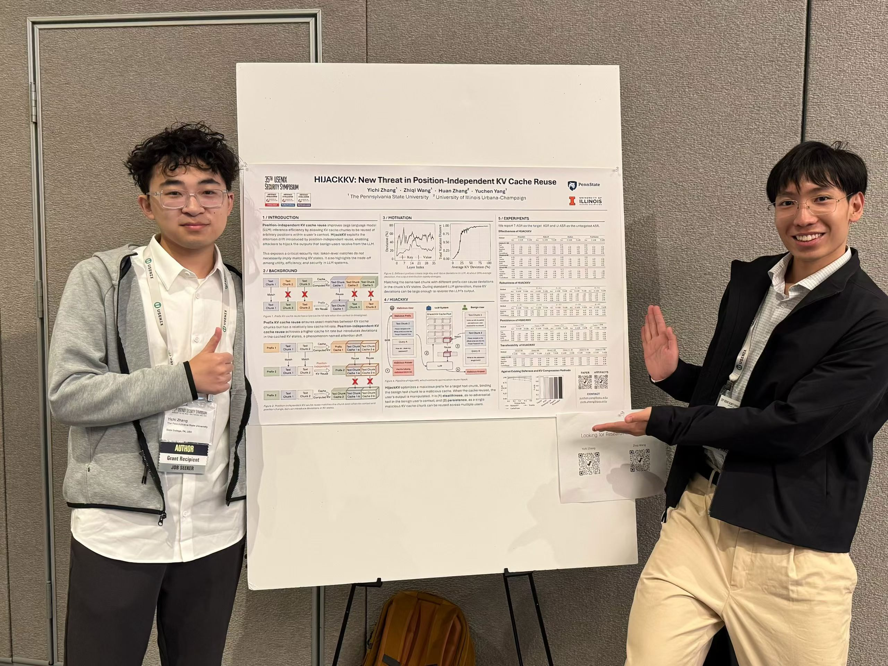
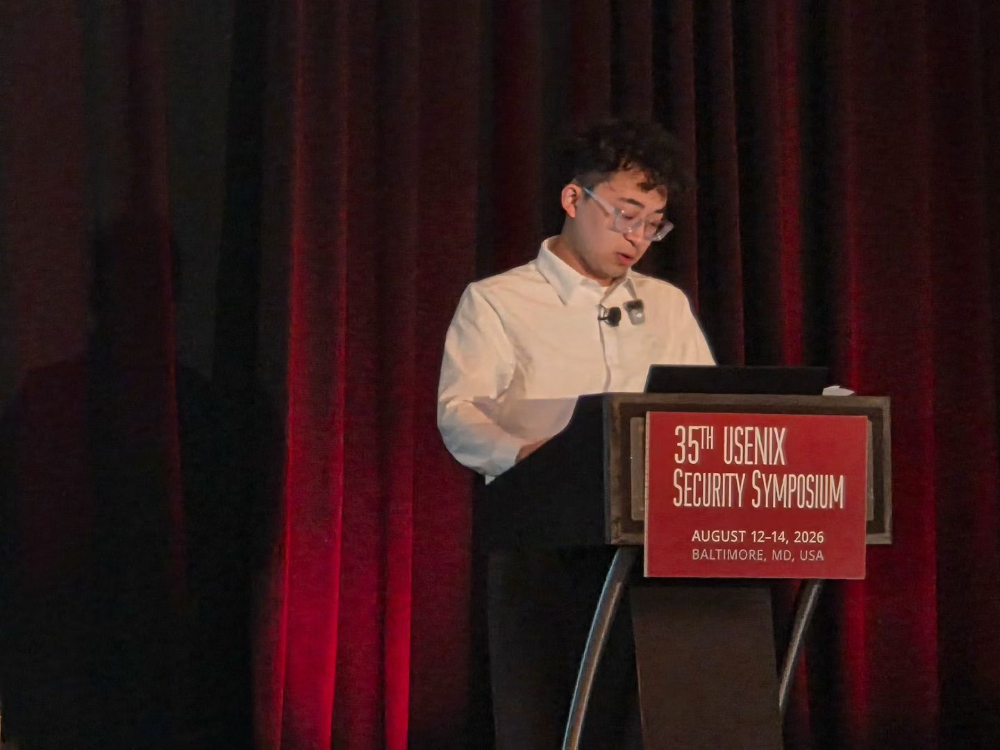
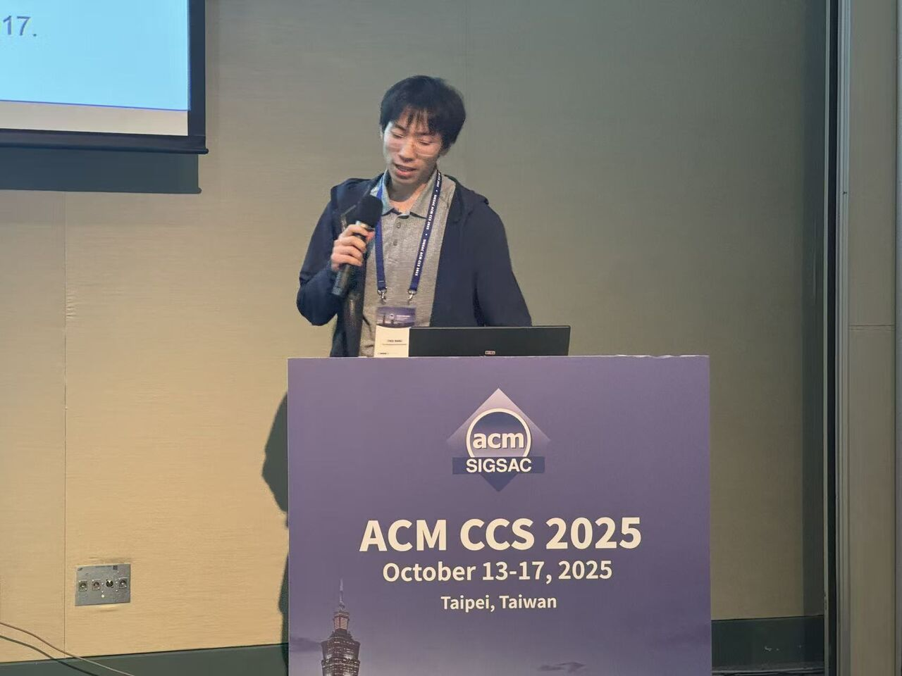
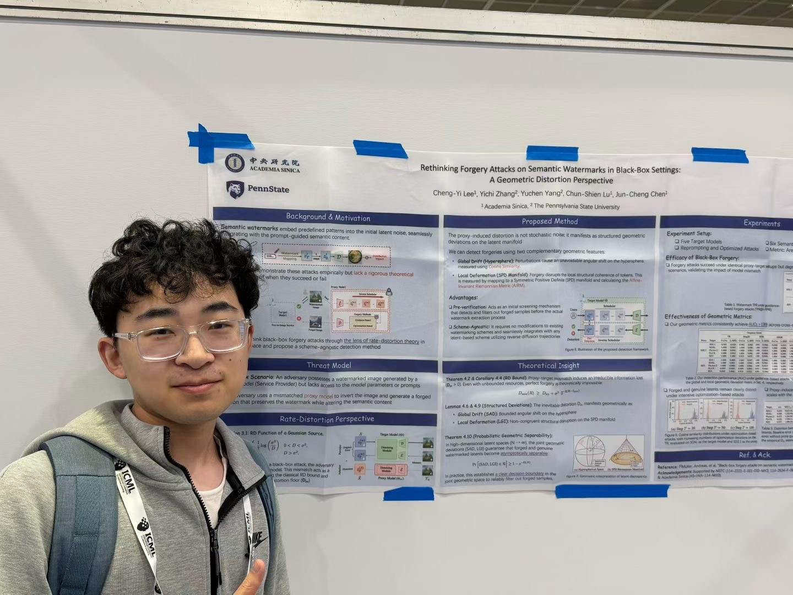
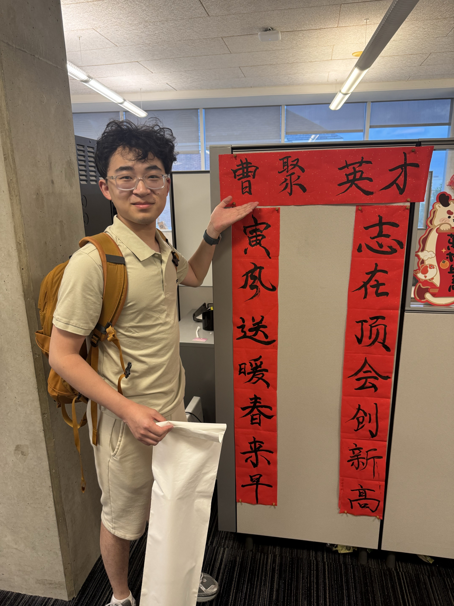

Lab Moments
Dec 23, 2025 • Crazy Crab • DC

Lab Moments
Aug 14, 2026 • Baltimore • USENIX Security ’26

Lab Moments
Aug 14, 2026 • Baltimore • USENIX Security ’26

Lab Moments
Oct 17, 2025 • Taipei • ACM CCS ’25

Lab Moments
Jul 9, 2026 • Seoul • ICML ’26

Lab Moments
Aug 11, 2026 • Baltimore • JHU • At Yuchen's Home Lab
Group
I am honored to work with the following brilliant people.
Ph.D. Students

Yichi Zhang
PhD Student
Fall 2025 – Now
Bologna · ECAI ’25
Seoul · ICML ’26
Baltimore · USENIX Security ’26


Master Students
- Anglin Cai (NWU, 2026.2 - current)
- Zhenxiang Huang (HKU, 2025.12 - current)
Undergraduate Students
- Scott Garcia (Penn State, 2026.3 - current, advisor for Honors Program Thesis)
- Deekshith Reddy Bhoomireddy (Penn State, 2025.11 - current)
- Rishit Rai (Penn State, 2025.11 - current)
Alumni
- Yurun Lin (Master student @ Drexel, 2025.10 - 2026.05)
- Zihao Zhao (Undergraduate student @ JHU, 2023.12 - 2024.12 → Ph.D. Student @ JHU)
- Qichang Liu (Undergraduate student @ Tsinghua, 2024.06 - 2024.12 → Ph.D. Student @ UIUC)